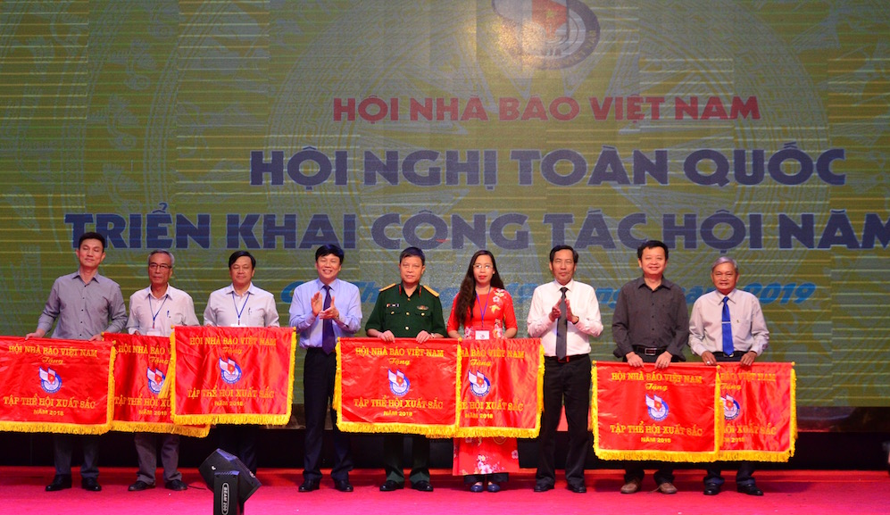
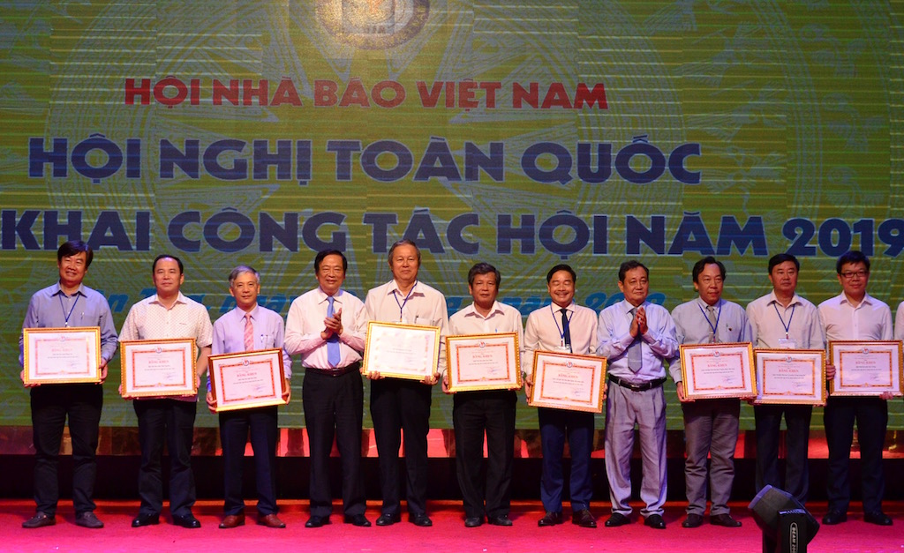

Trang chủ > Chuyên mục > Văn hoá > Đời sống > Nâng cao chất lượng đội ngũ cán bộ, hội viên Hội Nhà báo Việt Nam

Nâng cao chất lượng đội ngũ cán bộ, hội viên Hội Nhà báo Việt Nam
(ĐCSVN) - Đồng chí Thuận Hữu đề nghị các cấp Hội Nhà báo tăng cường hơn nữa công tác giáo dục chính trị tư tưởng cho đội ngũ hội viên; tập trung xây dựng, củng cố tổ chức Hội vững mạnh; nâng cao chất lượng đội ngũ cán bộ, hội viên, đáp ứng yêu cầu thực hiện nhiệm vụ.
Lãnh đạo Hội Nhà báo Việt Nam trao tặng Cờ thi đua xuất sắc cho các đơn vị - Ảnh: PC
Tiếp tục Hội nghị toàn quốc triển khai công tác Hội Nhà báo Việt Nam năm 2019, chiều 19/4, Hội nghị đã nghe nhiều ý kiến tâm huyết của các nhà báo đến từ các cơ quan báo chí, Hội Nhà báo và cơ quan chủ quản, quản lý báo chí.
Những kinh nghiệm trong hoạt động Hội Nhà báo
Từ thực tiễn hoạt động báo chí, các đại biểu đã cùng nhau chia sẻ, thảo luận hoạt động Hội Nhà báo hiện nay, đặc biệt trong việc thực hiện Nghị quyết Trung ương 6 (khóa XII) về đổi mới, sắp xếp tổ chức bộ máy của hệ thống chính trị; việc thực hiện Quy hoạch phát triển và quản lý báo chí toàn quốc đến năm 2025. Các đại biểu cũng chia sẻ kinh nghiệm để nâng cao chất lượng và hiệu quả hoạt động của tổ chức Hội Nhà báo Việt Nam nói chung và của từng Chi hội, Liên chi hội nói riêng.
Với tham luận đổi mới tổ chức trong bối cảnh tỉnh hợp nhất các cơ quan báo chí truyền thông, đại diện Hội Nhà báo tỉnh Quảng Ninh cho biết: Quảng Ninh đi tiên phong hợp nhất các cơ quan báo chí truyền thông từ năm 2014. Theo đó, năm 2018 tỉnh thành lập Trung tâm Truyền thông Quảng Ninh và chính thức hoạt động từ 1/1/2019. Đến nay, sau 1 quý thực hiện, Trung tâm bước đầu vận hành theo mô hình mới – cơ quan truyền thông đa phương tiện.
Hội Nhà báo tỉnh Quảng Ninh cho biết, trước đây khi chưa hợp nhất, Hội Nhà báo tỉnh có 10 chi hội, liên chi hội, câu lạc bộ. Sau khi hợp nhất, Hội đã sắp xếp lại trên cơ sở thành lập 1 Liên chi hội Trung tâm Truyền thông Quảng Ninh với 7 chi hội trực thuộc. Hội Nhà báo tỉnh Quảng Ninh cho rằng, hợp nhất để thành lập các cơ quan báo chí đa phương tiện, xây dựng toà soạn hội tụ đang là xu hướng nhất là đối với các cơ quan báo chí truyền thông ở các tỉnh, thành phố. Hội Nhà báo tỉnh Quảng Ninh xác định nhiệm vụ trọng tâm của Hội là nắm bắt tâm tư, nguyện vọng, đồng thời bồi dưỡng nghiệp vụ và động viên những người làm báo thực hiện tốt nhiệm vụ của mình.
Với tham luận vai trò của Liên Chi hội trong công tác đào tạo kỹ năng làm báo hiện đại cho hội viên, Tổng Biên tập Báo Le Courrier du Viet Nam, Phó Chủ tịch Thường trực Liên chi hội Thông tấn xã Việt Nam chia sẻ kinh nghiệm ngoài việc xây dựng đội ngũ phóng viên, biên tập viên có bản lĩnh chính trị vững vàng còn phải chuyên nghiệp, hiện đại. Do vậy, Liên chi hội đã thường xuyên phối hợp với các đơn vị mở các khoá đào tạo kỹ năng làm báo hiện đại, cập nhật cho hội viên xu hướng mới của báo chí. Các hình thức bồi dưỡng nghiệp vụ rất đa dạng và linh hoạt. Tiêu biểu nhất là các khoá đào tạo làm phóng sự truyền hình ngắn cho các phóng viên thường trú; mời giảng viên từ Đại học Stirling, Vương quốc Anh giảng dạy kỹ năng sản xuất đồ hoạ chuyển động; mở khoá đào tạo kỹ năng ảnh báo chí và truyền hình cho phóng viên tác nghiệp trong các tình huống đặc biệt khẩn cấp, trang bị kỹ năng chụp hình, chỉnh sửa ảnh, làm tin hình, livestream trên thiết bị di động, flycam…

11 tập thể đón nhận Bằng khen do Trung ương Hội Nhà báo Việt Nam trao tặng - Ảnh: PC
Chia sẻ kinh nghiệm trong việc đào tạo những phóng viên giỏi, Chi hội Báo Lao động đã chia sẻ kinh nghiệm của mình trong đào tạo phóng viên giỏi, trước hết là mạnh dạn cử phóng viên đeo bám những mảng đề tài khó như: điều tra nhập vai. Hai là, thường xuyên luân chuyển phóng viên giữa các vùng, miền để tìm và phát huy thế mạnh của phóng viên. Ba là, thường xuyên đào tạo phóng viên, kể các phóng viên có kinh nghiệm và phóng viên trẻ về quy trình làm báo hiện đại, xu hướng và thách thức mới. Hoạt động này, Chi hội đặc biệt quan tâm, trong đó đã phối hợp tổ chức 30 buổi trong giai đoạn 2016-2018 (trung bình 1 tháng/buổi). Đặc biệt, Chi hội thường xuyên nắm bắt kỹ năng, quy trình hoạt động nghiệp vụ của phóng viên để nếu có những sai sót trong tác nghiệp thì cùng nhau họp bàn chỉ ra để rút kinh nghiệm và phát huy hơn những mặt mạnh…
Tại Hội nghị, cùng với việc trao đổi, thảo luận chia sẻ những kinh nghiệm trong hoạt động của Hội, Hội nghị đã nghe báo cáo công tác tổng kết hoạt động kiểm tra; hoạt động nghiệp vụ năm 2018, kế hoạch năm 2019; công tác thi đua khen thưởng năm 2018 và nhiệm vụ năm 2019…
Không ngừng nâng cao chất lượng hoạt động của Hội cũng như chất lượng báo chí
Phát biểu kết luận Hội nghị, đồng chí Thuận Hữu, Uỷ viên Trung ương Đảng, Phó trưởng Ban Tuyên giáo Trung ương, Tổng Biên tập Báo Nhân dân, Chủ tịch Hội Nhà báo Việt Nam đề nghị các cấp Hội tiếp tục đầu tư nghiên cứu, xây dựng chương trình công tác, kế hoạch hoạt động cụ thể phù hợp với thực tiễn của đơn vị, nâng cao chất lượng hoạt động của Hội cũng như chất lượng báo chí. Trong đó, cần làm tốt hơn nữa công tác tuyên truyền, cổ vũ thực hiện tốt nhiệm vụ phát triển kinh tế - xã hội 5 năm, giai đoạn 2016-2020 theo Nghị quyết Đại hội Đảng toàn quốc lần thứ XII; tiếp tục tuyên truyền Nghị quyết Trung ương 4 (khoá XII) gắn với việc thực hiện Chỉ thị 05 của Bộ Chính trị về học tập và làm theo tư tưởng, đạo đức, phong cách Hồ Chí Minh; tuyên truyền các ngày lễ lớn, các sự kiện trọng đại của đất nước.
Đồng chí Thuận Hữu đặc biệt lưu ý các cấp Hội Nhà báo tăng cường hơn nữa công tác giáo dục chính trị tư tưởng cho đội ngũ hội viên, thực hiện tốt Luật Báo chí và 10 điều Quy định đạo đức nghề nghiệp người làm báo Việt Nam, Quy tắc sử dụng mạng xã hội; tăng cường quản lý việc sinh hoạt của hội viên, phóng viên thường trú tại địa phương; tập trung xây dựng, củng cố tổ chức Hội vững mạnh, nâng cao chất lượng đội ngũ cán bộ Hội các cấp, đáp ứng yêu cầu thực hiện nhiệm vụ.
Chủ tịch Hội Nhà báo Việt Nam đề nghị các cấp Hội tiến hành tổng kết 15 năm thực hiện Chỉ thị 37-CT/TW ngày 18/3/2004 của Ban Bí thư về “Tiếp tục nâng cao vai trò, chất lượng hoạt động của Hội Nhà báo Việt Nam trong thời kỳ mới”; phát động đợt thi đua đặc biệt, rộng khắp trong tất cả các cấp Hội và hội viên thực hiện tốt Nghị quyết Đại hội Đảng toàn quốc lần thứ XII và Nghị quyết Đại hội X Hội Nhà báo Việt Nam hướng tới kỷ niệm 70 năm Ngày thành lập Hội Nhà báo Việt Nam (21/4/1950 – 21/4/2020); 95 năm Ngày Báo chí cách mạng Việt Nam (21/6/1925-21/6/2020), chào mừng Đại hội Hội Nhà báo các cấp tiến tới Đại hội Hội Nhà báo toàn quốc lần thứ XI, nhiệm kỳ 2020-2025.
Nhân dịp này, Hội Nhà báo Việt Nam đã trao Cờ thi đua xuất sắc của Hội cho 7 đơn vị; tặng Bằng khen cho 11 tập thể và 15 cá nhân có thành tích xuất sắc trong công tác Hội năm 2018. 1 cá nhân của Trung ương Hội Nhà báo Việt Nam vinh dự đón nhận Huân chương Lao động hạng Nhì do Chủ tịch nước trao tặng./.